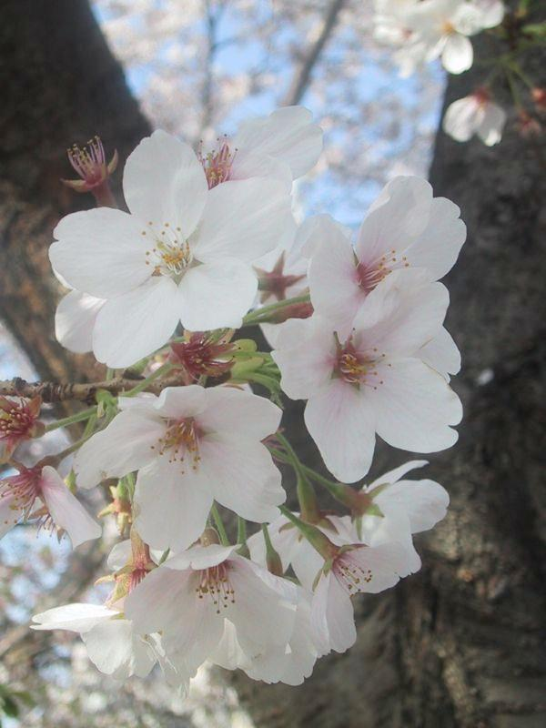

<a href=""<a href="https://commons.wikimedia.org/wiki/File:Cherry_blossoms_(2004).jpg"> 桜の花　（おそらくソメイヨシノ） 京都市、2004年4月上旬</a> © 2004 by <a href="https://en.wikipedia.org/wiki/ja:User:Gombe">Gombe</a> is licensed under <a href="https://creativecommons.org/licenses/by-sa/4.0/">CC BY-SA 4.0</a>